Chapter 3 Spatial datasets
This chapter introduces the spatial datasets used in the workflows and explains how they can be accessed and prepared for analysis, using the R package terra (Hijmans 2024).
Many raw input datasets can be downloaded via the R package geodata (Hijmans et al. 2024). Others can be accessed here: https://www.dropbox.com/scl/fo/9k1tio0ct9egi6e8ji0mu/ABTRVDOxB3Kp6k4muyjGJHo?rlkey=8eh2zmb47i843p99xv1l5yw0m&st=2qt7snru&dl=0.
A standalone R script containing the workflow is available here: https://github.com/FBaudron/book_standardized_workflows/blob/main/03-spatial_datasets/spatial_datasets.R.
We first load geodata and terra. We also provide a path where final spatial datasets are saved.
if (!require("geodata")) install.packages("geodata")
if (!require("terra")) install.packages("terra")
library(geodata)
library(terra)
path = "Data"3.0.1 Shapefile of sub-Saharan Africa
We create a shapefile of sub-Saharan Africa from country admin zones available from the gadm() function of geodata. We save and plot it.
ssa = geodata::gadm(country = c("AGO", "BEN", "BWA", "BFA", "BDI", "CMR", "CPV",
"CAF", "TCD", "COM", "COD", "COG", "CIV", "DJI", "GNQ", "ERI", "SWZ", "ETH",
"GAB", "GMB", "GHA", "GIN", "GNB", "KEN", "LSO", "LBR", "MDG", "MWI", "MLI",
"MRT", "MUS", "MOZ", "NAM", "NER", "NGA", "RWA", "STP", "SEN", "SYC", "SLE",
"SOM", "ZAF", "SSD", "SDN", "TZA", "TGO", "UGA", "ZMB", "ZWE"), level = 0, path = path)
writeVector(ssa, "Data/Spatial/Processed/ssa.shp", overwrite = TRUE)
plot(ssa)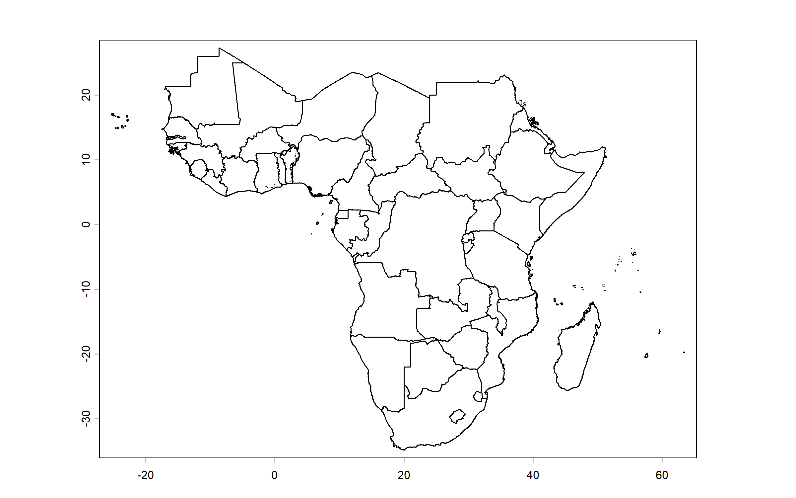
3.0.2 Rasters derived from SPAM
We download a 5 rasters that were derived from the Spatial Production Allocation Model (SPAM) (IFPRI 2020) including (1) a raster of total cropland area per grid cell (ha per cell), (2) a cropland mask, (3) a raster of harvested maize area, (4) a raster of value of food crops, and (5) a raster of value of non-food crops. These rasters can be downloaded here: https://www.dropbox.com/scl/fo/9k1tio0ct9egi6e8ji0mu/ABTRVDOxB3Kp6k4muyjGJHo?rlkey=8eh2zmb47i843p99xv1l5yw0m&st=2qt7snru&dl=0.
The raster of total cropland area per cell was calculated as the sum of the physical area of 46 crop specific rasyers, with missing values treated as zero during aggregation. Because the summed estimates could exceed the physical area of a grid cell, total cropland area was capped at the cell’s physical area. The proportion of each cell under cropland was then calculated, and cells with at least 1% cropland were retained to construct a cropland mask.
The cropland mask was applied to the cropland area, as well as the 3 other rasters.
Input data for the calculation of these rasters can be found here: https://dataverse.harvard.edu/dataset.xhtml?persistentId=doi:10.7910/DVN/FSSKBW.
cropmask = rast("Data/Spatial/Raw/cropmask.tif")
plot(cropmask, main = "Cropland mask")
plot(ssa, add = T)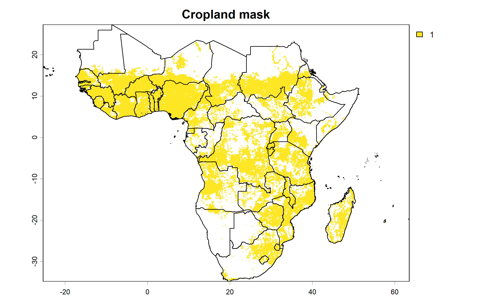
writeRaster(cropmask, "Data/Spatial/Processed/cropmask.tif", overwrite = TRUE)cropland = rast("Data/Spatial/Raw/cropland.tif")
plot(cropland, main = "Cropland area per cell")
plot(ssa, add = T)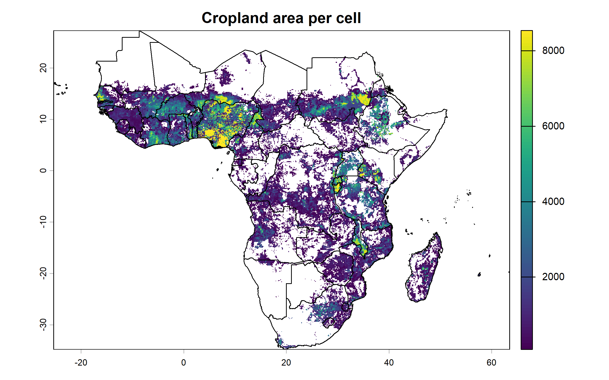
writeRaster(cropland, "Data/Spatial/Processed/cropland.tif", overwrite = TRUE)We harmonize the spatial resolution and grid alignment of the harvested maize area raster with those of the cropland mask using bilinear interpolation. This method estimates values for the new grid cells from neighbouring cells, making it suitable for continuous variables. We then crop the raster to the extent of the study area and apply the cropland mask, setting cells outside the mask to NA. This ensures that the resulting raster has the same spatial grid as the cropland mask and covers only the area retained for analysis.
maize_area = rast("Data/Spatial/Raw/spam2017V2r1_SSA_H_MAIZ_A.tif")
maize_area = resample(maize_area, cropmask, method = "bilinear")
maize_area = crop(maize_area, cropmask)
maize_area = mask(maize_area, cropmask)
names(maize_area) = "maize_area"
writeRaster(maize_area, "Data/Spatial/Processed/maize_area.tif", overwrite = TRUE)
# Log-transformed maize area
maize_area_log = log1p(maize_area)
plot(maize_area_log, main = "Maize area per cell (log scale)")
plot(ssa, add = T)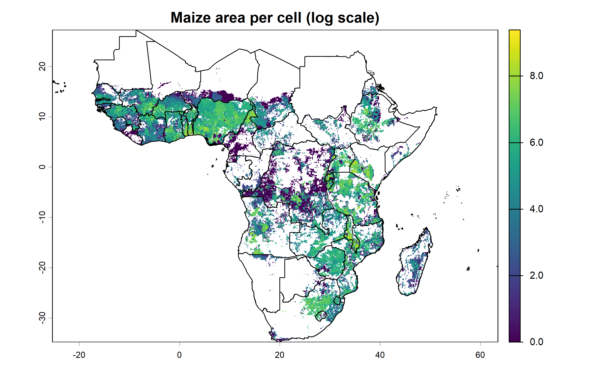
For value of food crops, the following crops were considered: banana, barley, beans, cassava, chickpea, coconut, cowpea, groundnut, lentil, other cereals, other pulses, other roots and tubers, plantain, pearl millet, potato, rice, sesame, small millet, sorghum, soybean, sweet potato, temperate fruits, tropical fruits, vegetables, wheat and yams. Conversely, for value of non-food crops, the following crops were considered: Arabica coffee, Robusta coffee, cocoa, cotton, other fibre crops, oil palm, other oil crops, tea, sugarcane, sugarbeet, sunflower and rapeseed.We harmonize spatial resolution of both rasters with the cropland mask, and mask cells outside of the cropland mask.
value_food_crops = rast("Data/Spatial/Raw/value_food_crops.tif")
value_food_crops = resample(value_food_crops, cropmask, method = "sum")
value_food_crops = crop(value_food_crops, cropmask)
value_food_crops = mask(value_food_crops, cropmask)
names(value_food_crops) = "value_food_crops"
writeRaster(value_food_crops, "Data/Spatial/Processed/value_food_crops.tif", overwrite = TRUE)
# Log-transformed value of food crops
value_food_crops_log = log1p(value_food_crops)
plot(value_food_crops_log, main = "Value of food crops per cell (log-scale)")
plot(ssa, add = T)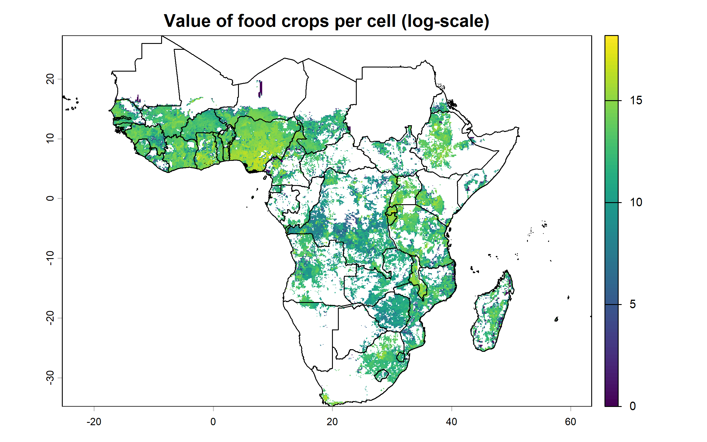
value_nonfood_crops = rast("Data/Spatial/Raw/value_nonfood_crops.tif")
value_nonfood_crops = resample(value_nonfood_crops, cropmask, method = "sum")
value_nonfood_crops = crop(value_nonfood_crops, cropmask)
value_nonfood_crops = mask(value_nonfood_crops, cropmask)
names(value_nonfood_crops) = "value_nonfood_crops"
writeRaster(value_nonfood_crops, "Data/Spatial/Processed/value_nonfood_crops.tif",
overwrite = TRUE)
# Log-transformed value of non-food crops
value_nonfood_crops_log = log1p(value_nonfood_crops)
plot(value_nonfood_crops_log, main = "Value of non food crops per cell (log-scale)")
plot(ssa, add = T)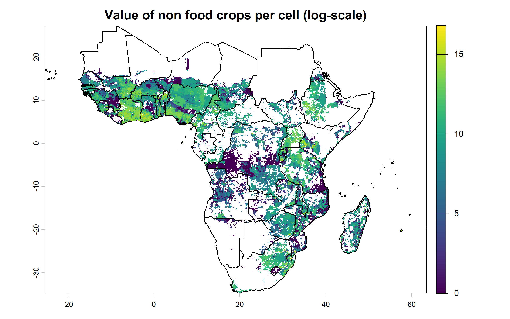
3.0.3 Soil data
We prepare the following rasters (harmonize spatial resolution with the cropland mask, and mask cells outside of the cropland mask) from input data available in geodata:
- sand content in the 0–30 cm soil layer;
- soil pH in the 0–30 cm soil layer;
- plant available water capacity.
sand_05 = soil_af(var = "sand", depth = 5, path = path)
sand_15 = soil_af(var = "sand", depth = 15, path = path)
sand_30 = soil_af(var = "sand", depth = 30, path = path)
# Align to analysis grid
sand_05 = resample(sand_05, cropmask, method = "bilinear")
sand_15 = resample(sand_15, cropmask, method = "bilinear")
sand_30 = resample(sand_30, cropmask, method = "bilinear")
# Crop soil data to cropmask
sand_05 = crop(sand_05, cropmask)
sand_05 = mask(sand_05, cropmask)
sand_15 = crop(sand_15, cropmask)
sand_15 = mask(sand_15, cropmask)
sand_30 = crop(sand_30, cropmask)
sand_30 = mask(sand_30, cropmask)
sand = (sand_05 * 5 + sand_15 * 10 + sand_30 * 15)/(5 + 10 + 15)
names(sand) = "sand"
writeRaster(sand, "Data/Spatial/Processed/sand.tif", overwrite = TRUE)
plot(sand, main = "Soil sand 0-30 cm")
plot(ssa, add = T)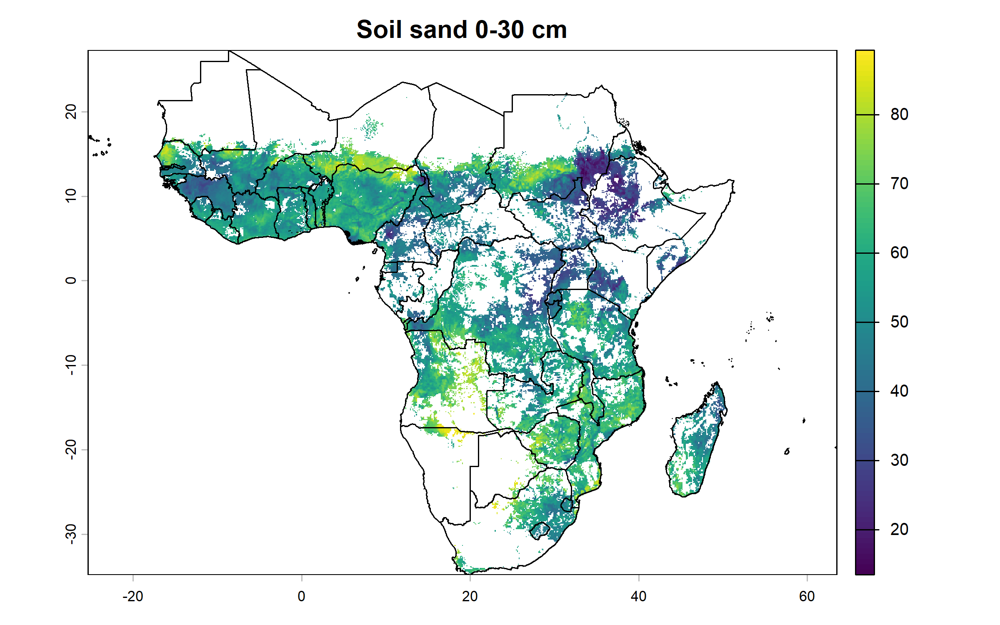
ph_05 = soil_af(var = "pH", depth = 5, path = path)
ph_15 = soil_af(var = "pH", depth = 15, path = path)
ph_30 = soil_af(var = "pH", depth = 30, path = path)
# Align to analysis grid
ph_05 = resample(ph_05, cropmask, method = "bilinear")
ph_15 = resample(ph_15, cropmask, method = "bilinear")
ph_30 = resample(ph_30, cropmask, method = "bilinear")
# Crop soil data to cropmask
ph_05 = crop(ph_05, cropmask)
ph_05 = mask(ph_05, cropmask)
ph_15 = crop(ph_15, cropmask)
ph_15 = mask(ph_15, cropmask)
ph_30 = crop(ph_30, cropmask)
ph_30 = mask(ph_30, cropmask)
ph = -log10((10^-ph_05 * 5 + 10^-ph_15 * 10 + 10^-ph_30 * 15)/(5 + 10 + 15))
names(ph) = "ph"
writeRaster(ph, "Data/Spatial/Processed/ph.tif", overwrite = TRUE)
plot(ph, main = "Soil pH 0-30 cm")
plot(ssa, add = T)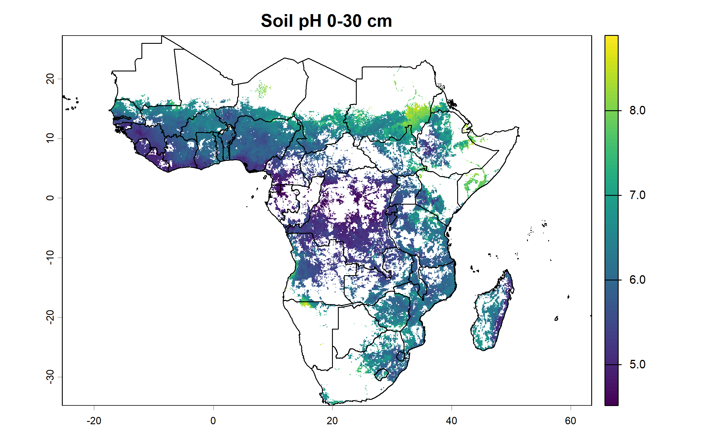
pawc = soil_af_water("tawcpf23mm", "erzd", path = path)
pawc = resample(pawc, cropmask, method = "bilinear")
pawc = crop(pawc, cropmask)
pawc = mask(pawc, cropmask)
names(pawc) = "pawc"
writeRaster(pawc, "Data/Spatial/Processed/pawc.tif", overwrite = TRUE)
plot(pawc, main = "Plant available water capacity")
plot(ssa, add = T)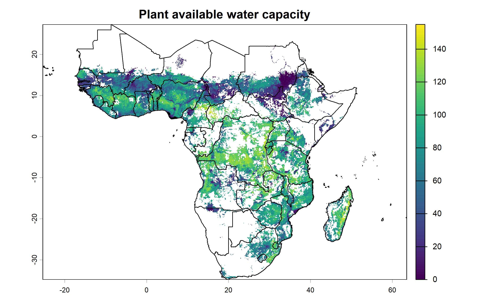
Total soil nitrogen is extracted from AfSIS. It can be downloaded here: https://www.dropbox.com/scl/fi/15egyyj6g5522nqf8172w/soil_grid_ntot.tiff?rlkey=wjzv9vinh6l48h0xj8ymz6z6w&st=n0dyuk9m&dl=0. We harmonize the spatial resolution of the raster with the cropland mask, and mask cells outside of the cropland mask.
soil_n = rast("Data/Spatial/Raw/soil_grid_ntot.tiff")
# Align to analysis grid
soil_n = resample(soil_n, cropmask, method = "bilinear")
# Crop soil data to cropmask
soil_n = crop(soil_n, cropmask)
soil_n = mask(soil_n, cropmask)
names(soil_n) = "soil_n"
writeRaster(soil_n, "Data/Spatial/Processed/soil_n.tif", overwrite = TRUE)
# Log-transformed value of soil total N
soil_n_log = log1p(soil_n)
plot(soil_n_log, main = "Soil total N 0-20 cm (log-scale)")
plot(ssa, add = T)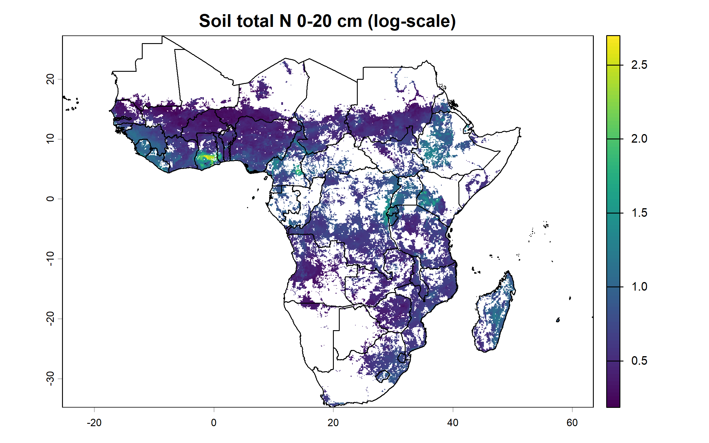
3.0.4 Climate data
We prepare the following rasters (harmonize spatial resolution with the cropland mask, and mask cells outside of the cropland mask) from input data available in geodata:
- Mean annual average temperature;
- Mean annual precipitation.
tavg = worldclim_global(var = "tavg", res = 5, path = path)
tavg = resample(tavg, cropmask, method = "bilinear")
tavg = crop(tavg, cropmask)
tavg = mask(tavg, cropmask)
tavg = mean(tavg)
names(tavg) = "tavg"
writeRaster(tavg, "Data/Spatial/Processed/tavg.tif", overwrite = TRUE)
plot(tavg, main = "Mean annual temperature")
plot(ssa, add = T)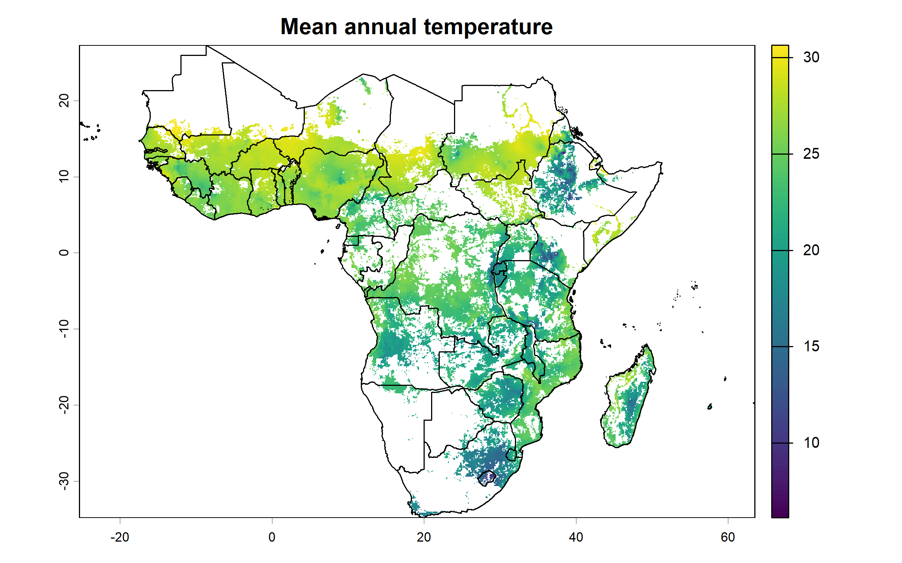
prec = worldclim_global(var = "prec", res = 5, path = path)
prec = resample(prec, cropmask, method = "bilinear")
prec = crop(prec, cropmask)
prec = mask(prec, cropmask)
prec = sum(prec)
names(prec) = "prec"
writeRaster(prec, "Data/Spatial/Processed/prec.tif", overwrite = TRUE)
plot(prec, main = "Mean annual precipitation")
plot(ssa, add = T)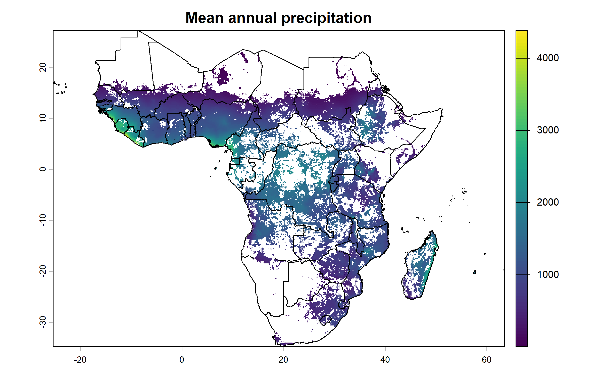
3.0.5 Socio-economic data
Rural population density is extracted from (Lloyd, Sorichetta, and Tatem 2017), and livestock density from (Gilbert 2012). Both rasters can be downloaded here: https://www.dropbox.com/scl/fo/9k1tio0ct9egi6e8ji0mu/ABTRVDOxB3Kp6k4muyjGJHo?rlkey=8eh2zmb47i843p99xv1l5yw0m&st=2qt7snru&dl=0.
Livestock density is expressed in Tropical Livestock Units (TLU), which aggregate the biomass of different livestock species using the following conversion factors: cattle (0.7 TLU), pigs (0.2 TLU), sheep and goats (0.2 TLU), and poultry (0.001 TLU).
Both rasters are converted from density to counts per pixel by multiplying pixel values by pixel area. Counts are then aggregated to match the spatial resolution of the cropland mask, and cells outside the cropland mask are excluded.
# Load rural population density (people/km2)
rural_population = rast("Data/Spatial/Raw/rural_population_5km_2020_ssa.tif")
# Convert population density to population count per pixel
rural_population_area = cellSize(rural_population, unit = "km")
rural_population_count = rural_population * rural_population_area
# Aggregate population counts to the cropmask resolution
rural_population = resample(rural_population_count, cropmask, method = "sum")
# Crop and mask to croplandrural_population = crop(rural_population, cropmask)
rural_population = crop(rural_population, cropmask)
rural_population = mask(rural_population, cropmask)
names(rural_population) = "rural_population"
writeRaster(rural_population, "Data/Spatial/Processed/rural_population.tif", overwrite = TRUE)
# Log-transformed value of rural population
rural_population_log = log1p(rural_population)
plot(rural_population_log, main = "Rural population, 2020 (log-scale)")
plot(ssa, add = TRUE)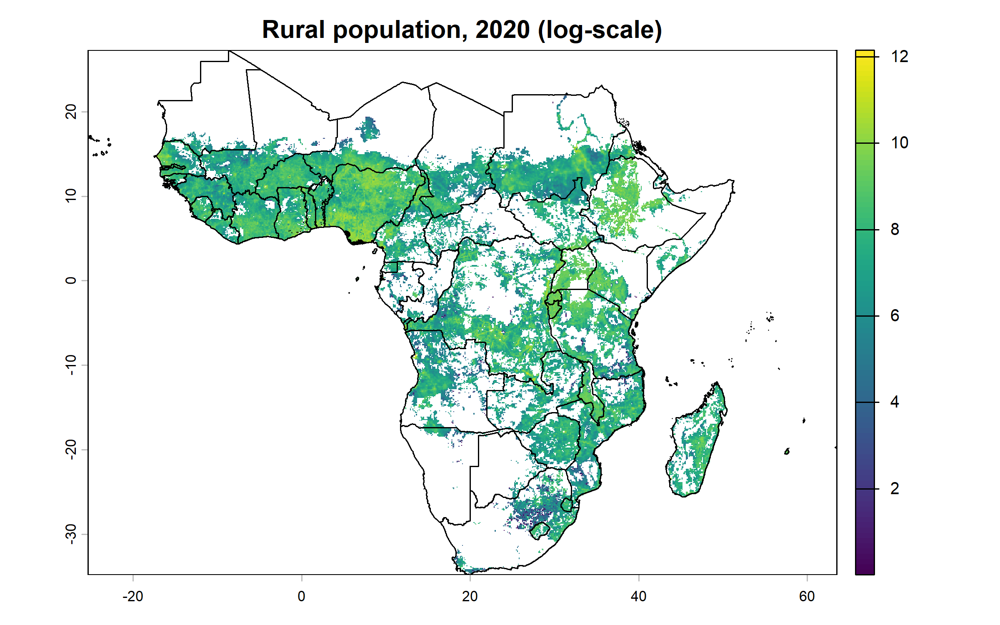
# Load TLU density (TLU/km2)
tlu = rast("Data/Spatial/Raw/tlu.tiff")
# Convert TLU density to TLU count per pixel
tlu_area = cellSize(tlu, unit = "km")
tlu_count = tlu * tlu_area
# Aggregate TLU counts to the cropmask resolution
tlu = resample(tlu_count, cropmask, method = "sum")
# Crop and mask to cropland
tlu = crop(tlu, cropmask)
tlu = mask(tlu, cropmask)
names(tlu) = "tlu"
writeRaster(tlu, "Data/Spatial/Processed/tlu.tif", overwrite = TRUE)
# Log-transformed value of Tropical Livestock Units
tlu_log = log1p(tlu)
plot(tlu_log, main = "Tropical livestock units (log-scale)")
plot(ssa, add = TRUE)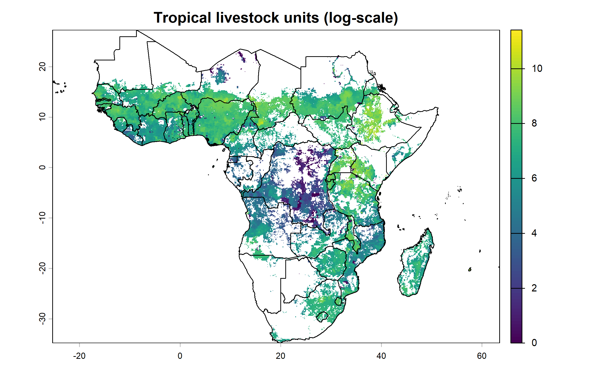
Travel time to cities is extracted from (Nelson et al. 2019), using data available in geodata
travel_time = geodata::travel_time(to = "city", size = 6, up = TRUE, path = path)
travel_time = resample(travel_time, cropmask, method = "bilinear")
travel_time = crop(travel_time, cropmask)
travel_time = mask(travel_time, cropmask)
names(travel_time) = "travel_time"
writeRaster(travel_time, "Data/Spatial/Processed/travel_time.tif", overwrite = TRUE)
# Log-transformed value of travel time to cities
travel_time_log = log1p(travel_time)
plot(travel_time_log, main = "Travel time to cities of at least 50,000 inhabitants (log-scale)")
plot(ssa, add = T)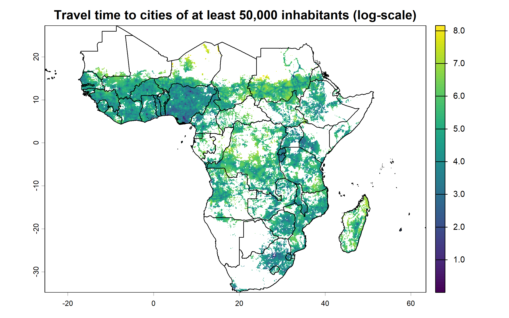